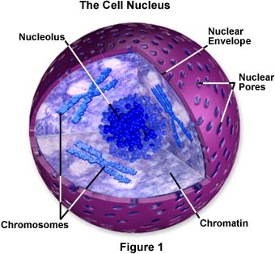
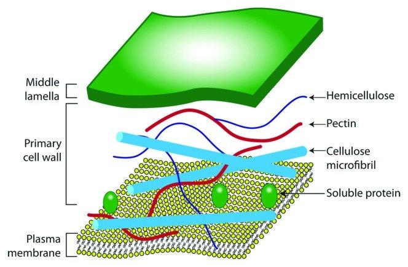
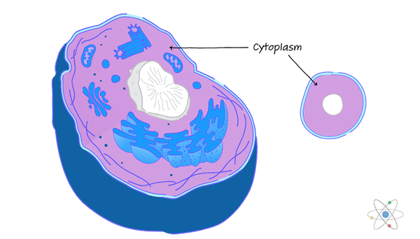
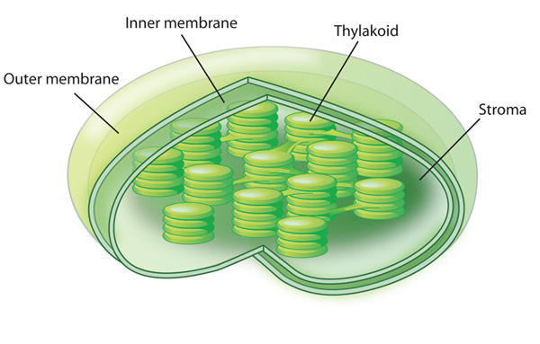
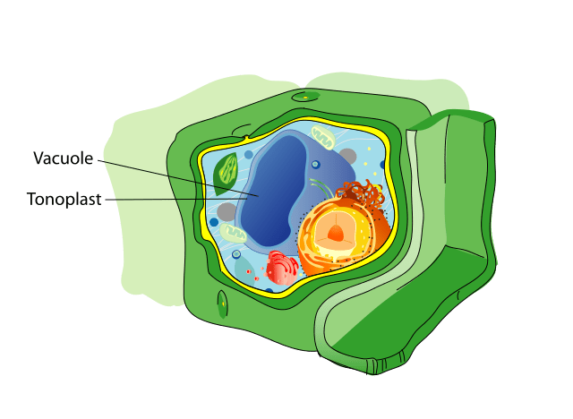
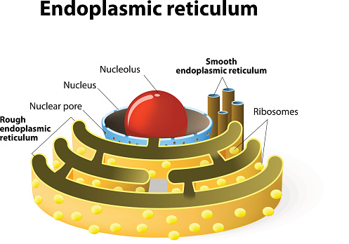
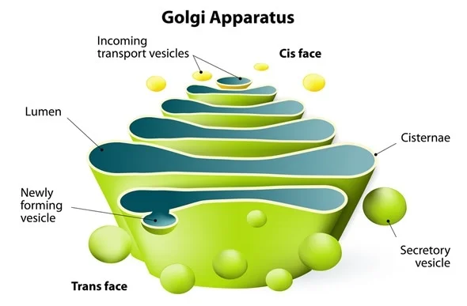
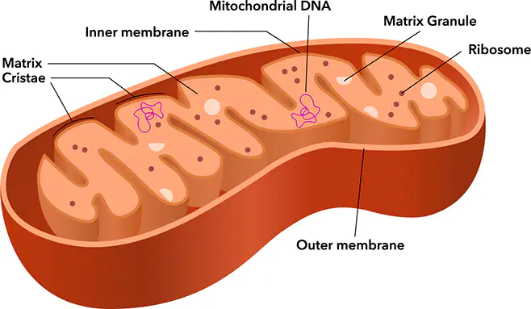

Plant Cells Explained By Samuel Jin and Ella Kim

The nucleus is what stores the cell's DNA (short for Deoxyribonucleic Acid). The nucleus is like the brain, because it controls what organelles do. The nucleus is only found in eukaryotic cells, because eu sounds like "do". This means that only eukaryotic cells carry genetic information, such as DNA. The nucleus is by far the most inportant organelle. However, the nucleus cannot work by itself, because the genetic information has to be compatible with other organelles. The nucleus has two main parts: the nucleuolus, which stores the gentic information, and the nucleus, which protects it.
Since plants don't have bones like humans and animals, they still have a structural support system. Plant cells have another layer of protection and structure called the cell wall. The cell was acts as the bones of a plant cell, since plant cells are also weaker and more vulnerable than animal cells. Thus, they need the cell wall. The cell wall and cell membrane work together, by controlling what things can go inside the cell, such as carbon dioxide, water, and nutrients, and what cannot go in or out of the cell. Cell wall is made of cellulose, which are the basic building blocks for cell wall and cell membrane.
The cell membrane is one of the most important organelles. The cell membrane is similar to human skin, sice they both have similar functions. The cell membrane and the human skin both protect the inside organs and organelles. The cell membrane controls what can go inside the cell and what can go out of the cell. The cell membrane also keeps cytoplasm from going out of the cell.
Cytoplasm by far is one of the most important parts of a cell. Cytoplasm is the clear, sticky substance that holds all of the organelles together so they don't just float around in the cell and bump into each other. Cytoplasm also provides help in chemical reactions for photosynthesis. Cytoplasm also holds the cell membrane and cell wall, too.
Chloroplasts are only found in plant cells, because only plants use phoyosynthesis to get their food and energy. Chloroplasts also work with thew vacuole, which stores nutrients. Chloroplasts don't produce energy and food through photosynthesis. They help with the process of photosynthesis and help mix the carbon dioxide and water to make oxygen and glucose.
The vacuole is one of the most important organelles, because the vacuole also works with the chloroplasts. The vacuole stores all of the fat, nutrients, and excess water. The vacuole prevents the cell from flooding in with water, since the vacuole maintains water balance. Another part of the vacuole, (yes, there are 2 parts) called the tonoplast, is inside the vacuole. Its function is similar to that of the cell membrane. Tonoplast is what filters out the acidic waste and toxins inside of the cytoplasm.
The Endoplasmic Reticulum, aka the ER, is the organelle which makes and produces proteins that can be used to repair the cell membrane, in with plant cells, the cell wall too. The ER is attached to the nucleus, where it can get specific information on what proteins it has to make. The ER has 2 parts- the smooth endoplasmic reticulum, and the rough endoplasmic reticulum.
The golgi apparatus is an organelle which works well the the ER. The golgi apparatus transports the proteins which are made from the endoplasmic reticulum. The endoplasmic reticulum has the proteins "exported" to the golgi apparatus, which then sends out the proteins to the other organelles.
Mitochondria or Mitochondrion is an organelle that makes the energy used for other organelles. Mitochondria uses a process called oxidative phosphorylation which uses oxygen to create their energy, called adenosine triphosphate or ATP. ATP is used in energy so all the organelles can function correctly.
Ribosomes are organelles that act like mail carriers. Ribosomes contain DNA and RNA (Deoxyribonucleic Acid and Ribonucleic Acid) The nucleus also stores these important building blocks, yet it is stored in the nucleus rather than trasported. Ribosomes use DNA and RNA and make proteins, along with mitochondria. Mitochondria, however, use DNA and RNA to make ATP, which is energy. Ribosomes, on the other hand, use their stored DNA and RNA to make proteins that can be used to repair cell wall, cell membrane, and other organelles.